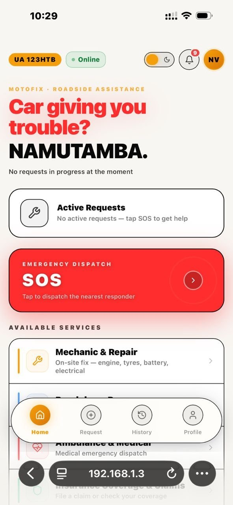
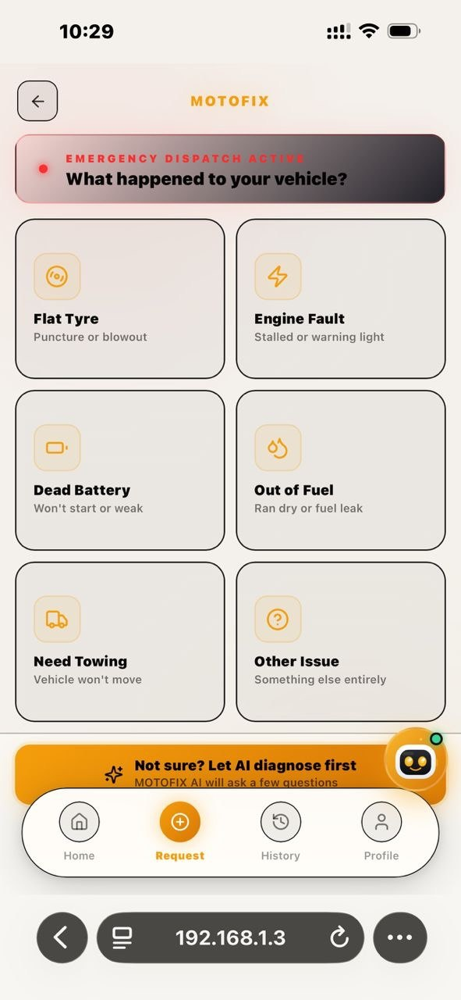

Every driver in Uganda knows the feeling. The car coughs, splutters and dies — maybe on the Northern Bypass, maybe far from town as night falls. You are stranded, you are not sure what is wrong, and you have no idea which mechanic to trust or what a fair price even looks like. For most people, roadside trouble is not just a mechanical problem; it is a moment of real anxiety.
We built MOTOFIX to change that. MOTOFIX is a roadside assistance platform that connects stranded drivers with verified mechanics and tow providers in minutes — the same way a ride-hailing app connects you to a driver. Help is no longer a guessing game or a string of frantic phone calls. It is one tap away.

Built for the way Ugandans actually drive
We did not copy a foreign app and hope it would fit. MOTOFIX is designed around our roads, our mechanics and our payment habits. You request help from the phone you already own. You pay the way you already pay — Mobile Money or cash. And the people who come to help are local, verified providers building their livelihoods through the platform.
From the moment you request help, MOTOFIX guides you: an AI assistant helps describe the problem, the nearest qualified mechanic is matched to you, you watch them approach on a live map, and you see a fair price before any work begins. Every step is built to replace uncertainty with confidence.

More than a tow truck — a whole ecosystem
MOTOFIX goes beyond a single rescue. Drivers can find genuine spare parts and trusted dealers, compare and apply for vehicle insurance, locate nearby fuel stations, and stay on top of routine maintenance with smart reminders. For mechanics, it is a steady stream of work and a fairer, more transparent way to earn.
Our vision is simple: a Uganda where no driver is ever truly stranded, and where getting help is fast, fair and stress-free. We are just getting started.